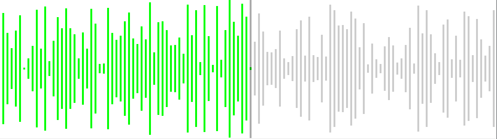
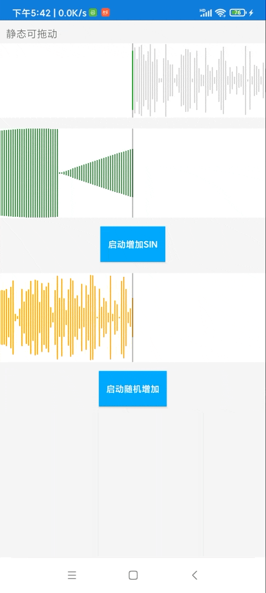

Android 柱状波形图 wave view
更新日期 2025-12-19
- 2025-12-19 更新文档
- 2022-8-15 创建文档
前言
柱状波形图是一种常见的图形。一个个柱子按顺序排列，构成一个波形图。
柱子的高度由输入数据决定。如果输入的是音频的音量，则可得到一个声波图。

在一些音频软件中，我们也可以左右拖动声波，来改变音频的播放进度
本文举例的自定View，实现如下功能：
- 以柱状形式展示数据的大小
- 标明图形当前最中间的数据
- 可以横向拖动进度，进度就是让某个特定的数据居中展示
- 可以改变左右两边的柱子颜色
- 可以调整柱子的宽度
- 拖动完毕后监听当前进度
实现
首先创建类SoundWaveView继承自View
我们可以先记录给定的宽高，方便后面找到View的中间点
| private int viewWid = 1000; // px
private int viewHeight = 100; // px
@Override
protected void onSizeChanged(int w, int h, int oldw, int oldh) {
super.onSizeChanged(w, h, oldw, oldh);
viewWid = w;
viewHeight = h;
// ..
}
|
基本属性
例如柱子的颜色，宽度。可以设置个属性来记录，并开放出去可由外部来设置。
部分基本属性private float barWidDp = 1.5f;
private float barWidPx = 3f;
private float barGapPx = barWidPx / 2;
private int barCount = 1; // 当前宽度能绘制多少个柱子
private final Paint paint = new Paint();
private int leftColor = Color.GREEN;
private int rightColor = Color.LTGRAY;
private int middleLineColor = Color.parseColor("#55000000");
设计监听器
拖动完毕后，可以将当前进度通知出去。也可以直接把触摸事件 MotionEvent 传出去。
| 监听器相关 |
|---|
| public interface OnEvent {
void onMoveEnd(); // 停止拖动了
void onDragTouchEvent(MotionEvent event);
}
private OnEvent onEventListener;
private void tellOnMoveEnd() {
if (onEventListener != null) {
onEventListener.onMoveEnd();
}
}
|
绘制图形
在onDraw方法中根据数据绘制图形
本例没有设计背景，直接绘制数据。
图形需求之一是要求某个数据能居中显示，我们用midIndex来标记这个数据的下标。
比较简单粗暴的实现方法，遍历整个数据列表，计算出每个数据的x坐标。超出范围的不绘制，范围内的逐一绘制。
@Override
protected void onDraw(Canvas canvas) {
super.onDraw(canvas);
if (dataList == null || dataList.isEmpty()) {
// draw nothing
drawMiddleLine(canvas);
return;
}
float x0 = viewWid / 2.0f;
if (midIndex > 0) {
x0 = x0 - (barGapPx + barWidPx) * midIndex; // 可能是负数
}
for (int i = 0; i < dataList.size(); i++) {
float d = dataList.get(i);
float x = x0 + (barWidPx + barGapPx) * i;
if (x < 0) {
continue;
}
if (x > viewWid) {
break;
}
if (i <= midIndex) {
paint.setColor(leftColor);
} else {
paint.setColor(rightColor);
}
paint.setStrokeWidth(barWidPx);
float bh = (d / showMaxData) * viewHeight;
bh = Math.max(bh, 4); // 最小也要一点高度 (1)
float bhGap = (viewHeight - bh) / 2f;
canvas.drawLine(x, bhGap, x, viewHeight - bhGap, paint);
}
drawMiddleLine(canvas);
}
private void drawMiddleLine(Canvas canvas) {
paint.setColor(middleLineColor);
canvas.drawLine(viewWid / 2f, 0, viewWid / 2f, viewHeight, paint);
}
- 如果数据太小，为了更美观，也要显示一点东西
左右拖动
本例给出的思路是在SoundWaveView中直接获取触摸事件并进行处理。
简单区分一下模式，分为纯展示和可拖动模式
/**
* 单纯播放 展示 无交互
*/
public static final int MODE_PLAY = 1;
/**
* 允许左右拖动
*/
public static final int MODE_CAN_DRAG = 2;
复写onTouchEvent方法，如果是MODE_CAN_DRAG模式，则拦截触摸事件。判断拖动的横向（x）距离。
| @Override
public boolean onTouchEvent(MotionEvent event) {
if (mode == MODE_CAN_DRAG) {
switch (event.getAction()) {
case MotionEvent.ACTION_MOVE:
float dx = (downX - event.getX()); // 不要那么灵敏
float movePercent = dx / viewWid;
int dIndex = (int) (movePercent * barCount);
int targetMidIndex = downOldMidIndex + dIndex;
targetMidIndex = Math.max(0, targetMidIndex);
targetMidIndex = Math.min(targetMidIndex, dataList.size() - 1);
setMidIndex(targetMidIndex);
Log.d(TAG, "onTouchEvent-MOVE; dx: " + dx + ", dIndex: " + dIndex + "; targetMidIndex: " + targetMidIndex);
break;
case MotionEvent.ACTION_DOWN:
downX = event.getX();
downOldMidIndex = midIndex;
break;
case MotionEvent.ACTION_CANCEL:
case MotionEvent.ACTION_UP:
downOldMidIndex = midIndex;
tellOnMoveEnd();
break;
}
if (onEventListener != null) {
onEventListener.onDragTouchEvent(event);
}
return true;
}
return super.onTouchEvent(event);
}
|
完整代码
文件SoundWaveView.java，这个view主要目的是展现声波，取名为「SoundWave」
| SoundWaveView完整代码 |
|---|
| import android.content.Context;
import android.graphics.Canvas;
import android.graphics.Color;
import android.graphics.Paint;
import android.util.AttributeSet;
import android.util.Log;
import android.view.MotionEvent;
import android.view.View;
import androidx.annotation.Nullable;
import java.util.ArrayList;
import java.util.List;
/**
* @author an.rustfisher.com
*/
public class SoundWaveView extends View {
private static final String TAG = "rustAppSoundWaveView";
/**
* 单纯播放 展示 无交互
*/
public static final int MODE_PLAY = 1;
/**
* 允许左右拖动
*/
public static final int MODE_CAN_DRAG = 2;
private int mode = MODE_PLAY; // 1 播放
private List<Float> dataList = new ArrayList<>(100);
private float showMaxData = 40f; // 能显示的最大数据
private int midIndex = 0; // 在中间显示的数据的下标
private float barWidDp = 1.5f;
private float barWidPx = 3f;
private float barGapPx = barWidPx / 2;
private int barCount = 1; // 当前宽度能绘制多少个柱子
private int viewWid = 1000; // px
private int viewHeight = 100; // px
private final Paint paint = new Paint();
private int leftColor = Color.GREEN;
private int rightColor = Color.LTGRAY;
private int middleLineColor = Color.parseColor("#55000000");
private float downX = 0; // getX
private int downOldMidIndex = 0;
public interface OnEvent {
void onMoveEnd(); // 停止拖动了
void onDragTouchEvent(MotionEvent event);
}
private OnEvent onEventListener;
public SoundWaveView(Context context) {
this(context, null);
}
public SoundWaveView(Context context, @Nullable AttributeSet attrs) {
this(context, attrs, 0);
}
public SoundWaveView(Context context, @Nullable AttributeSet attrs, int defStyleAttr) {
super(context, attrs, defStyleAttr);
paint.setColor(Color.BLUE);
}
@Override
protected void onSizeChanged(int w, int h, int oldw, int oldh) {
super.onSizeChanged(w, h, oldw, oldh);
viewWid = w;
viewHeight = h;
calBarPara();
Log.d(TAG, "onSizeChanged: " + w + ", " + h);
Log.d(TAG, "onSizeChanged: barWidPx: " + barWidPx);
}
@Override
protected void onDraw(Canvas canvas) {
super.onDraw(canvas);
if (dataList == null || dataList.isEmpty()) {
// draw nothing
drawMiddleLine(canvas);
return;
}
float x0 = viewWid / 2.0f;
// 绘制数据
if (midIndex > 0) {
x0 = x0 - (barGapPx + barWidPx) * midIndex; // 可能是负数
}
for (int i = 0; i < dataList.size(); i++) {
float d = dataList.get(i);
float x = x0 + (barWidPx + barGapPx) * i;
if (x < 0) {
continue;
}
if (x > viewWid) {
break;
}
if (i <= midIndex) {
paint.setColor(leftColor);
} else {
paint.setColor(rightColor);
}
paint.setStrokeWidth(barWidPx);
float bh = (d / showMaxData) * viewHeight;
bh = Math.max(bh, 4); // 最小也要一点高度
float bhGap = (viewHeight - bh) / 2f;
canvas.drawLine(x, bhGap, x, viewHeight - bhGap, paint);
}
drawMiddleLine(canvas);
}
private void drawMiddleLine(Canvas canvas) {
paint.setColor(middleLineColor);
canvas.drawLine(viewWid / 2f, 0, viewWid / 2f, viewHeight, paint);
}
public float getMidByPercent() {
return midIndex / (float) (dataList.size() - 1);
}
@Override
public boolean onTouchEvent(MotionEvent event) {
if (mode == MODE_CAN_DRAG) {
switch (event.getAction()) {
case MotionEvent.ACTION_MOVE:
float dx = (downX - event.getX()); // 不要那么灵敏
float movePercent = dx / viewWid;
int dIndex = (int) (movePercent * barCount);
int targetMidIndex = downOldMidIndex + dIndex;
targetMidIndex = Math.max(0, targetMidIndex);
targetMidIndex = Math.min(targetMidIndex, dataList.size() - 1);
setMidIndex(targetMidIndex);
Log.d(TAG, "onTouchEvent-MOVE; dx: " + dx + ", dIndex: " + dIndex + "; targetMidIndex: " + targetMidIndex);
break;
case MotionEvent.ACTION_DOWN:
downX = event.getX();
downOldMidIndex = midIndex;
break;
case MotionEvent.ACTION_CANCEL:
case MotionEvent.ACTION_UP:
downOldMidIndex = midIndex;
tellOnMoveEnd();
break;
}
if (onEventListener != null) {
onEventListener.onDragTouchEvent(event);
}
return true;
}
return super.onTouchEvent(event);
}
public void setMode(int mode) {
this.mode = mode;
}
public int getMode() {
return mode;
}
public int getMidIndex() {
return midIndex;
}
public List<Float> getDataList() {
return dataList;
}
public void setOnEventListener(OnEvent onEventListener) {
this.onEventListener = onEventListener;
}
public void clear() {
dataList = new ArrayList<>();
midIndex = 0;
invalidate();
}
private void calBarPara() {
barWidPx = dp2Px(barWidDp);
barGapPx = barWidPx;
barCount = (int) ((viewWid - barGapPx) / (barWidPx + barGapPx));
paint.setStrokeWidth(barWidPx);
Log.d(TAG, "calBarPara: barCount: " + barCount);
}
public void setDataList(List<Float> input) {
dataList = new ArrayList<>(input);
midIndex = 0;
invalidate();
}
public void setMidIndex(int midIndex) {
this.midIndex = midIndex;
invalidate();
}
public void setMidEnd() {
setMidIndex(dataList.size() - 1);
}
// 设置当前播放进度
public void setPlayPercent(float percent) {
midIndex = (int) (percent * (dataList.size() - 1));
if (percent >= 1) {
midIndex = dataList.size() - 1;
}
invalidate();
}
public void setShowMaxData(float showMaxData) {
this.showMaxData = showMaxData;
}
public float getShowMaxData() {
return showMaxData;
}
// 不停地插入数据
public void addDataEnd(float f) {
dataList.add(f);
midIndex = dataList.size() - 1;
invalidate();
}
public void setLeftColor(int leftColor) {
this.leftColor = leftColor;
}
public void setRightColor(int rightColor) {
this.rightColor = rightColor;
}
private float dp2Px(float dp) {
float density = getContext().getResources().getDisplayMetrics().density;
int mark = dp > 0 ? 1 : -1;
return dp * density * mark;
}
private void tellOnMoveEnd() {
if (onEventListener != null) {
onEventListener.onMoveEnd();
}
}
}
|
layout中使用
| <com.rustfisher.tutorial2020.customview.soundwave.SoundWaveView
android:id="@+id/sound_wave_view"
android:layout_width="match_parent"
android:layout_height="100dp"
android:layout_marginTop="4dp"
android:background="@android:color/white"
app:layout_constraintTop_toTopOf="parent" />
|
activity中使用模拟数据private void setData1() {
List<Float> dataList = new ArrayList<>();
for (int i = 0; i < 1000; i++) {
dataList.add((float) (Math.random() * soundWaveView.getShowMaxData()));
}
soundWaveView.setDataList(dataList);
soundWaveView.setMidIndex(0);
soundWaveView.setOnEventListener(new SoundWaveView.OnEvent() {
@Override
public void onMoveEnd() {
Log.d(TAG, "onMoveEnd: " + soundWaveView.getMidIndex());
}
@Override
public void onDragTouchEvent(MotionEvent event) {
// 在这里可以收到触摸事件
}
});
}
运行示例：

我们也可以扩展一下，假设不使用柱子，也可以把相邻点连接起来，形成折线图的样子。
相关代码在： AndroidTutorial - gitee
扩展阅读
本文也发布在
segmentfault
cnblogs
juejin
51CTO
oschina
知乎
华为云社区
csdn
简书
本站说明
一起在知识的海洋里呛水吧。广告内容与本站无关。如果喜欢本站内容，欢迎投喂作者，谢谢支持服务器。如有疑问和建议，欢迎在下方评论~
🖥️云雨服务器
🙋反馈问题
🔥最近更新
🍪投喂作者